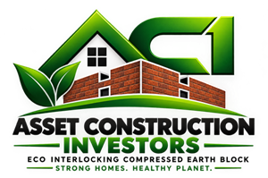
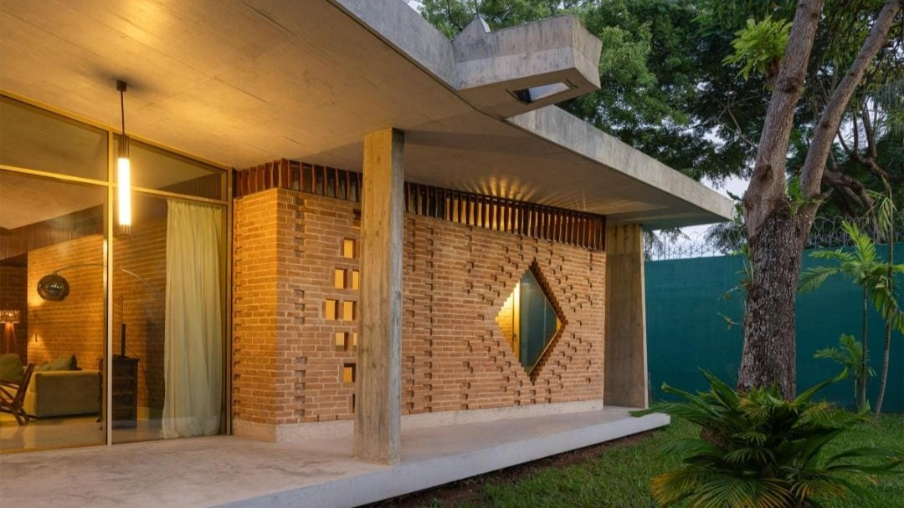
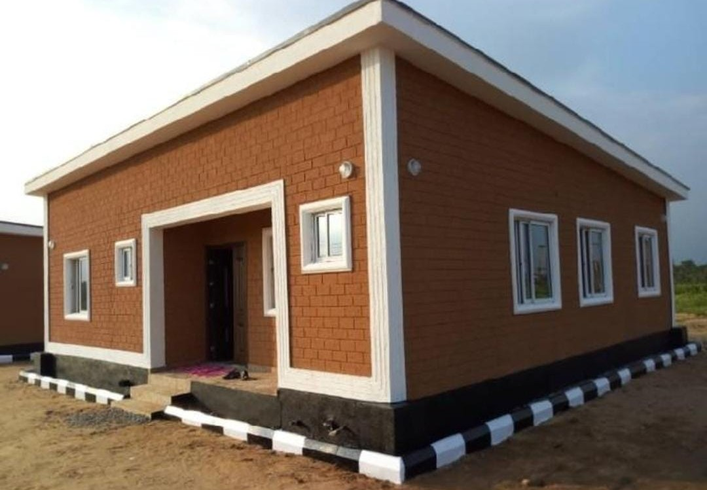
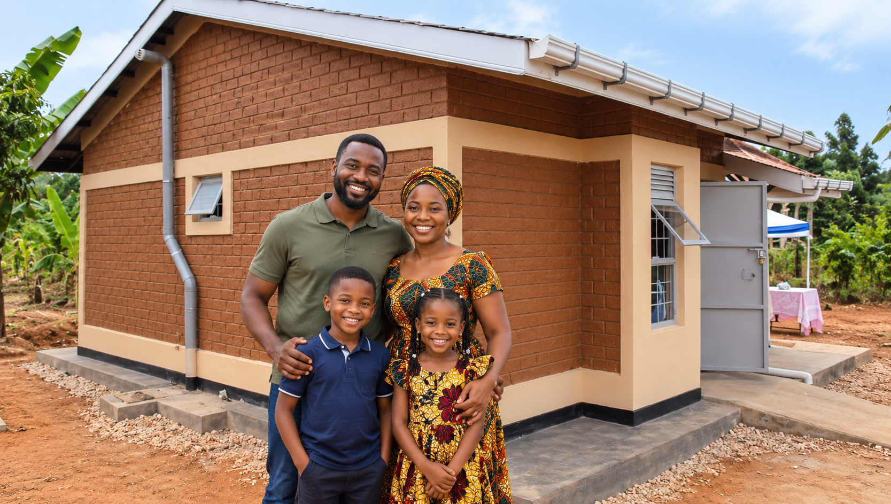

This is a complete HTML document for the ACI website, redesigned to clearly communicate their mission of making quality homeownership accessible through sustainable, interlocking compressed earth block construction.
```html
ACI – Asset Construction Investors | Interlocking CEB Blocks

BUILD BETTER. BUILD AFFORDABLY. BUILD TO LAST.
Quality homes built with interlocking compressed earth blocks — with ACI producing and retailing the blocks people can buy to build durable, beautiful and affordable homes in Bamenda and beyond.
Locally produced blocks • Smart construction • Beautiful homes • Built for everyday life
A Better Way to Build

Good homes shouldn't be out of reach. For many families, building a home means facing rising material costs, expensive cement, plastering, transportation and lengthy construction processes. At ACI, we believe affordable housing should not mean sacrificing strength, durability, appearance or dignity.
That's why we're developing a smarter way to build — interlocking compressed earth blocks. Made using locally available earth and engineered for construction, our blocks reduce unnecessary steps while creating homes with a distinctive natural brick appearance. Cameroon's housing challenge is significant, and local building materials are a key part of the solution.
Our vision: A future where a hardworking family can buy quality, locally produced blocks and build a beautiful, durable home without spending a lifetime trying to afford it.
"ACI is making quality homeownership more accessible through smarter, sustainable construction."
Why Interlocking Earth Blocks?

STRONGER CONSTRUCTION. SMARTER BUILDING. NATURAL BEAUTY. ACI produces and retails interlocking compressed earth blocks for people who want to build durable, practical and beautiful homes. Our blocks reduce unnecessary construction steps while making greater use of locally available materials.
🧱 Smarter Construction
Interlocking blocks are designed to fit together, reducing reliance on conventional mortar between courses and simplifying construction.
💰 Lower Construction Costs
By reducing material, labor and finishing requirements, interlocking earth construction has the potential to make home construction more economical.
🌍 Local Materials
We use earth-based technology that makes greater use of locally available materials and local skills.
🌡️ Comfortable Homes
Earth-based walls provide useful thermal mass, helping moderate indoor temperature fluctuations.
🏠 Beautiful Without Hiding the Block
Why cover beautiful brickwork? The natural texture and color of the earth block can become part of the architectural design.
♻️ A More Responsible Approach
Stabilized earth construction reduces reliance on fired bricks. In Cameroon, development programs have already promoted stabilized earth bricks.
Less Mortar. Less Plaster. Less Waste.
Our interlocking block system is designed to reduce the need for conventional mortar between block courses and can allow selected walls to remain exposed without conventional plastering, depending on the design, block specification and finishing requirements.
Our projects showcase the power of interlocking CEB. ACI produces the blocks on site and makes them available for purchase by families, builders and contractors. Customers can buy the blocks and use them for their own construction projects, while our construction work demonstrates how the system can be used to create beautiful, durable homes.
01 — SOURCE
Local Earth
Suitable soil is identified and prepared for block production.
02 — PRODUCE
Compress
Prepared earth is compressed into strong, consistent interlocking blocks.
03 — BUILD
Interlock
Blocks fit together to create clean, efficient walls with reduced mortar.
04 — FINISH
Keep it Natural
Where appropriate, the natural earth-block appearance becomes part of the design.
05 — LIVE
Move In
A beautiful, functional home designed around what families actually need.
EARTH → BLOCK → CUSTOMER → WALL → HOUSE → FAMILY
A design ready to be lived in: The blocks themselves provide a modern burned‑brick aesthetic, with clean lines and a warm, natural texture. You don't need cement plastering to make them look good — they are ready for you to move in as soon as the roof goes on. Ideal for those on a budget: skip the extra cost of plastering, painting, or cladding, and enjoy a stylish, durable finish straight from the press.
We've completed several pilot projects in the North West Region – each one stands as proof that sustainable construction can be affordable and superior.
Asset Construction Investors is a construction and sustainable housing company that produces and retails interlocking compressed earth blocks, while promoting quality, affordable homes through innovative earth-based construction technology.
We are building around a simple idea: Affordable should not mean cheap-looking. And sustainable should not mean sacrificing comfort, strength or beauty.
Our approach combines: Local materials + on-site block production + retail access + innovative construction + practical design + affordability to help ordinary families and communities build quality homes.
Our Mission
To build durable, beautiful and affordable homes while promoting smarter and more sustainable construction in Cameroon.
Our Vision
To help create communities where quality housing is accessible to more families, one home at a time.
Our Values
AffordabilityHomes should be designed around what people can realistically afford.
QualityAffordable does not mean compromising on workmanship.
InnovationWe continuously look for better ways to build.
SustainabilityConstruction should make responsible use of local resources.
DignityEvery family deserves a home they can be proud of.
Starting in Bamenda. Thinking Beyond Bamenda.
ACI is beginning with a focus on Bamenda and the Northwest Region, where the need for practical, affordable construction solutions is particularly important. Our ambition is bigger than building individual houses. We want to develop a construction model that can eventually support:
Affordable family homes
Starter homes
Rental housing
Community housing
Schools & clinics
Small commercial buildings
Housing developments
One block can build a wall. Better systems can build communities.
Let's Build Something Better

Planning to build? Whether you already own land, need quality blocks for your project, are looking for an affordable home design, or simply want to understand how interlocking earth blocks work, talk to us. ACI produces and retails its blocks on site for customers to buy and build with.